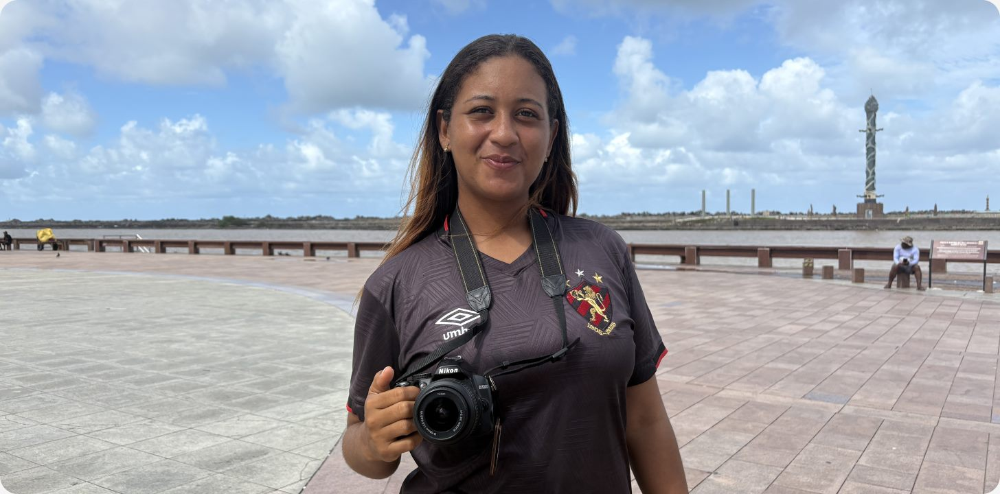
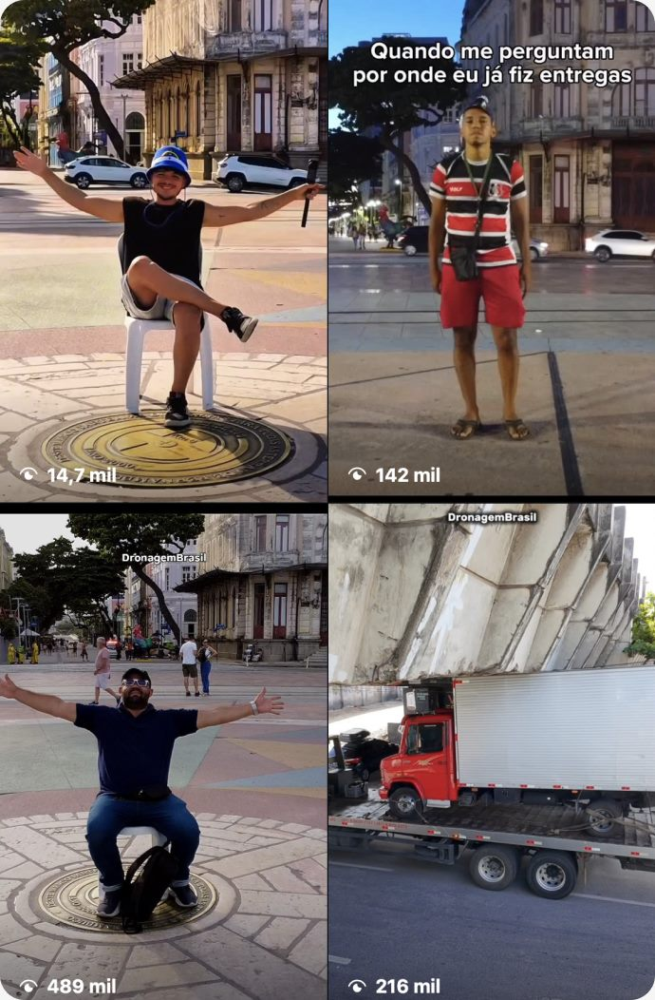
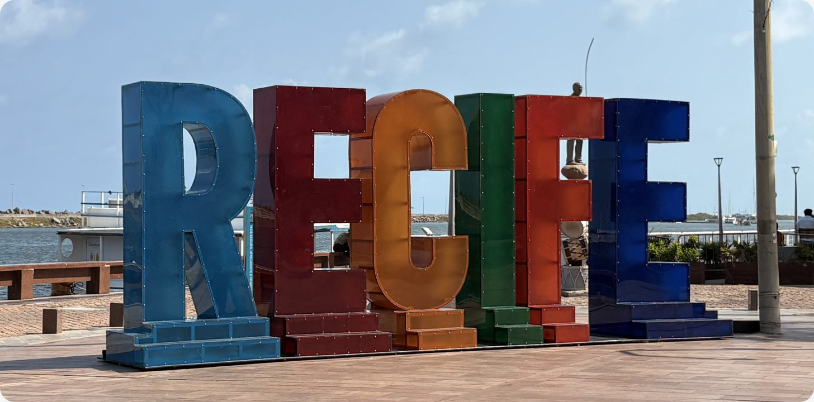
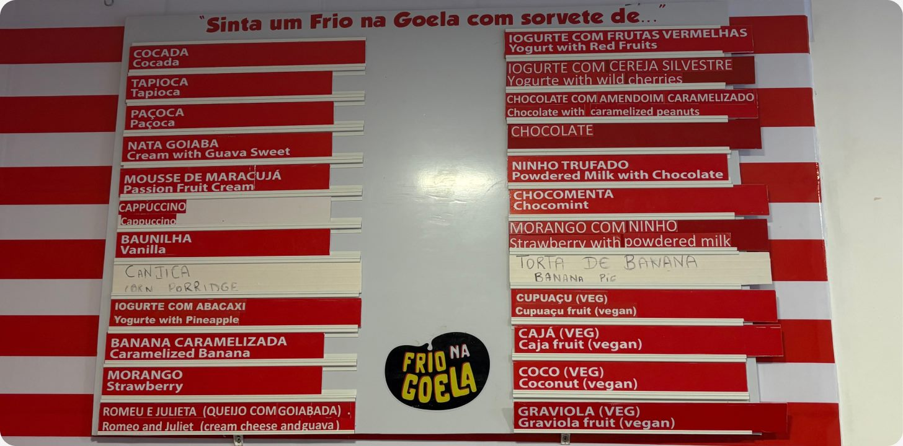

Mari Silva, a Paparazzi do Marco Zero

Quando se pensa em alguém que trabalha com turismo, é natural que a imagem do guia turístico seja a primeira que se apresenta no imaginário coletivo. No entanto, a verdade é que esse ramo é muito mais variado do que se imagina e vai muito além da figura dos guias.
Ao pisarmos no Marco Zero, é comum que fotógrafos se aproximem e perguntem se gostaríamos de fazer fotos para registrar o momento e guardar as memórias do dia. Esses são os “Paparazzis do Marco Zero”. Ao todo, 27 pessoas estão cadastradas e aptas para prestar o serviço para o público do Recife Antigo, segundo dados divulgados pelo Gabinete do Centro do Recife (Recentro).
27 pessoas cadastradas e aptas para prestar o serviço no recife antigo
Entre eles, está a fotógrafa Mari Silva, de 28 anos, que trabalha como “Paparazzi do Marco Zero” há cinco anos e começou a exercer a atividade após ser convidada por uma amiga buscando aumentar a sua renda e passar a receber um valor fixo com o seu trabalho. Antes da fotografia, ela já havia passado por vários empregos, como em mercados e em shoppings, mas foi no Marco Zero que se encontrou e não pretende mais sair.
“Nós abordamos os turistas, oferecemos o trabalho e mostramos um pouco da cultura aqui de Recife e oferecemos as fotos para vender como o nosso cartão postal, pegando o Marco Zero, as peças e esculturas principais do Parque das Esculturas e o letreiro do Recife”, explica.
A oportunidade de trabalho é considerada a mais proveitosa para Mari até o momento, tanto na questão financeira quanto na de aprendizado. Ela aprendeu na prática a como mexer com câmeras e precisou comprar os seus próprios equipamentos para poder começar a trabalhar no Marco Zero.
A sua rotina costuma ser baseada no movimento do turismo, mas a autonomia é um ponto importante no seu dia a dia. Cada fotógrafo escolhe o dia e horário de trabalho de sua preferência. No caso de Mari, os fins de semana costumam ser os melhores e mais movimentados para oferecer o serviço das fotografias.
“Como não falta turismo aqui, todos os dias o dia todo tem turismo, cada um faz o seu horário, se quiser trabalhar só no meio da semana ou só no fim de semana, que para mim, é o melhor momento para eu trabalhar.”
Caso os turistas gostem e desejem adquirir as fotos, elas podem ser compradas no formato impresso ou digital no valor de R$ 15. Segundo a fotógrafa, o momento mais gratificante é quando gostam do seu trabalho.
“Sem compromisso algum, só leva se gostar da foto e se não gostar também a gente apaga”, garante. “A gente é um bom vendedor e gosta de dinheiro, mas nada melhor do que ver o quanto é gratificante o final do trabalho, quando eles elogiam o nosso trabalho.”
Ainda de acordo com ela, algumas pessoas costumam voltar mesmo depois de anos para pedir para refazer fotos com a família.
“Somos a porta de entrada do turismo aqui de Recife”, destacou Mari durante a entrevista. E ela está certa, muitos visitantes costumam começar os seus passeios pelo Marco Zero, o que torna o lugar como a primeira impressão que fica do Recife Antigo para bastante gente.
“O primeiro ponto [turístico] que eles encontram são os fotógrafos, para ensinar um pouco mais o caminho que tem aqui no Recife Antigo e mostrar um pouco mais da cultura.”
O aprendizado da fotógrafa sobre o turismo passou a ser adquirido com a experiência ao passar dos anos e o convívio com outros trabalhadores, como os guias turísticos. Essa troca foi muito importante para ela ganhar o conhecimento necessário para poder aconselhar e receber os turistas.
“Foi com o tempo, tanto trabalhando aqui com os fotógrafos mesmo ou com os guias que contam a história repetidamente para todos os turistas que tem aqui, nós escutamos e nos envolvemos com a história também.”
Mari também passou a se sentir valorizada pelo trabalho que realiza dentro do turismo e da cultura do Bairro do Recife. É uma via de mão dupla, explica a fotógrafa.
“Eu aprendo tanto quanto eu ganho aqui nesse trabalho. É sempre bom agregar um pouco mais de conhecimento e aqui é o lugar perfeito para isso. Temos cultura, somos vastos de cultura aqui em Recife e estamos sempre agregando mais conhecimento.”
Ao ser questionada sobre qual é a sua opinião sobre se o Recife Antigo está preparado para receber turistas, Mari elogiou a segurança da região, mas percebe que a quantidade de obras inacabadas e a falta de conservação dos prédios podem afastar os visitantes.
“O Recife Antigo é bem policiado, só que não é tão bem visto pelas obras que têm assim nos prédios. Eu falo pelo ponto de vista que os turistas chegam falando. Como aqui é o ponto principal, eles esperam um pouco mais do que ter obras inacabadas, do que ter uma visão que não tem tanto a oferecer, como esses prédios aqui que ainda tem reformas presas no lugar.”
Os órgãos públicos, como a Secretaria de Turismo e Lazer do Recife e o Recentro, acabam não dando o devido reconhecimento que os “Paparazzi do Marco Zero” merecem.
Cursos, crachás e fardamentos são fornecidos e até chegam a ser obrigatórios para a classe, mas segundo a fotógrafa, não existe um apoio assegurado ou uma associação capaz de garantir os direitos desses trabalhadores.
“Eles cedem, como a gente tá sempre aqui e somos muito vistos aqui no Recife Antigo, só que falta um pouquinho mais de reconhecimento. A gente leva a imagem do Recife Antigo para fora de Pernambuco, para todos os estados possíveis, até fora do país também, mas não temos muito reconhecimento aqui não, infelizmente.”
“Os fotógrafos não tem uma base em que possa se apoiar, ter uma associação de fotógrafos, como aqui tem a associação dos barqueiros e a associação dos guias de turismo. Os fotógrafos não estão acobertados, não tem uma associação para ter uma garantia fixa aqui e até uma segurança também. O Recentro está sempre com a gente, eles oferecem cursos, fardamento, crachá, mas não temos um apoio certo, uma classificação certa como fotógrafos aqui.”
Indagados sobre o que foi dito por Mari Silva para esta reportagem, os órgãos confirmaram as informações sobre a falta de apoio financeiro para os fotógrafos do Marco Zero.
História marcante
O poder de uma fotografia é capaz de levar você para quando ela foi tirada. As lembranças daquele momento que foi vivido podem perdurar muito mais tempo se há um registro sobre elas. Foi isso que aconteceu com uma cliente de Mari há três anos.
Há alguns anos, um casal de idosos tirou fotos com ela durante uma viagem para o Recife. Depois, apenas a senhora voltou após o falecimento do companheiro e fez questão de repetir as fotografias e a fotógrafa. Mari, que estava durante o seu horário de almoço, foi procurada por colegas e foi tocada pelo gesto.
“Me emocionou por ela ter vindo refazer e ter feito questão de me procurar porque ela ainda tinha foto guardada que eu tinha feito deles dois, tinham feito uma foto minha fazendo foto deles, e ela fez questão de sentar e me esperar chegar para refazer aquele momento deles que não tinha como refazer mais porque ele já não estava mais com ela.”
O momento serviu para provar que o trabalho feito por ela é capaz de ficar guardado na memória das pessoas. O dia tinha sido registrado pelos familiares do casal, que chegaram até a fotógrafa porque registraram ela fazendo a foto na ocasião.
“Eles passam por aqui deixando lembranças, deixando saudades, momentos vividos e estamos aqui para recordar e relembrar os momentos passados deles também. É sempre legal”, completa.
Mostrando o Recife Antigo nas alturas
-Alex D’Ávila
Também no principal ponto turístico do Recife Antigo, um piloto de drone fornece um tipo diferente de lembrança para os turistas que visitam o bairro com fotos e vídeos feitos do alto. Alex D’Ávila mexe com drones desde 2015, mas começou a trabalhar no Marco Zero no final de 2024. Ele oferece fotografias e filmagens produzidas em seu drone para o público no valor de R$ 15 e R$ 50, respectivamente.
Dono da página “Dronagem Brasil” no Instagram e no YouTube, Alex chegou ao Marco Zero sem ter um plano muito bem definido. Mas sabia pilotar drones e foi de onde surgiu a ideia, que considera a mais acertada de sua vida. No local, o jovem também conseguiu se desenvolver como videomaker e passou a se sentir bem acolhido tanto por quem vai a passeio quanto por quem trabalha lá.
“É algo que traz paz para mim e me diverte bastante, porque eu conheço vários tipos de pessoas diferentes. Aqui no Marco Zero tem várias coisas que você pode fazer, ver e ser, é muito bom”.
Inicialmente, a ideia de fazer turismo não estava no radar de Alex, mas foi algo que acabou acontecendo naturalmente, já que pilotar os drones é algo presente em sua vida desde os 9 anos. Agora aos 20, tem certeza de que é isso que quer continuar fazendo e oferecendo para as pessoas.
“Eu não sabia o que fazer da vida exatamente e eu sabia pilotar drone, então foi a única coisa que eu tive ideia e foi a ideia mais certa que eu tive até hoje, porque me impulsionou e muito na minha vida profissional. Quando comecei aqui, eu cobrava R$ 10 numa imagem de drone, pelo amor de Deus. Não tinha noção de valor, não tinha noção de nada”.
Sobre a produção das fotos e vídeos, o piloto de drone costuma deixar os clientes à vontade e confortáveis para fazerem o que quiserem, mas sempre tenta fazer algo diferente a cada serviço e não liga de precisar repetir e fazer as gravações mais de uma vez.
“Algumas pessoas não querem fazer vídeos e outras querem. Eu entendo completamente. Quando não querem fazer vídeo eu me afasto, respeito o espaço da pessoa. Quando querem eu dou vários tipos de ideias de vídeo diferente, porque cada tipo de vídeo que eu gravo é diferente um do outro. Sempre boto mais amor em cada vídeo e é algo que me diverte muito fazendo. Tem pessoas que fazem e erram, a gente vai lá e faz outra vez. Tem gente que acerta de primeira.”
A rotina de Alex D’Ávila costuma começar ao meio-dia e vai até as 20 horas, de terça-feira a sábado. Com vídeos que já chegaram a quase 500 mil visualizações na Internet, ele acredita que o seu trabalho tem capacidade de impactar positivamente o Recife Antigo e, principalmente, o Marco Zero.

“Eu sinto que o meu trabalho, além de valorizar mais a parte do Marco Zero, valoriza também o que o cliente quer fazer. Fora que cada cliente que posta vídeo nas redes sociais, me marca ou não, acaba gerando mais movimentação aqui para o Marco Zero, tornando esse lugar ainda mais conhecido”, fala.
A valorização que sente com o seu próprio trabalho também é algo gratificante para ele. O sentimento de conseguir chegar até mais pessoas com o drone é uma satisfação que Alex costuma sentir enquanto está no Recife Antigo.
“Eu me sinto valorizado e eu gosto do que eu faço aqui. Muitos falam que eu cobro barato, mas eu cobro com coração. E isso me torna mais feliz por dentro e também consigo abranger mais pessoas. É algo que não é só quem tem mais dinheiro consegue fazer.”
E o Marco Zero?
Para Alex D’Ávila, o Marco Zero está se tornando um espaço seguro para trabalhar, desde o aumento da movimentação de policiais nas áreas próximas ao ponto turístico.
“Aqui no Marco Zero ultimamente está cada vez mais seguro, e isso é uma parte boa daqui. Porque a movimentação de policiais aumentou muito, seja aqui na parte dentro do Marco Zero ou nas partes exteriores.”
No entanto, mesmo com os avanços e melhorias na região, o piloto de drone considera que a falta de iluminação vem sendo um problema notório para os turistas que costumam visitar o Bairro do Recife, principalmente no período noturno. A ausência de postes em pleno funcionamento pode atrapalhar a visita das pessoas.
Além disso, o novo letreiro inaugurado pela prefeitura da cidade em março de 2026, que costuma ser bastante fotografado por visitantes, fica desligado durante a manhã e possui um material feito de acrílico com cores escuras e luzes de LED na parte de dentro do modelo, que mesmo quando ligadas são difíceis de enxergar a noite.

“O único problema que o Marco Zero vem enfrentando atualmente é a parte de iluminação. Na parte da noite, acaba afetando a área do turismo para o letreiro. Muitas das pessoas vêm de outros estados para tirar foto com o letreiro, seja ele na parte da manhã apagado ou na parte da noite aceso, aí quem chega aqui à noite vê ele apagado, fica bem triste e acaba indo embora, porque às vezes a pessoa vem aqui para o Marco Zero, não para passar o dia todo, mas para fazer uma coisa em específico. Às vezes vem de longe só para isso, então é algo bem negativo, mas fora isso, o Marco Zero só tem coisas boas.”
Título a definir – Gabriel Dias
Um pouco mais distante, a alguns metros do Marco Zero, na rua Dona Maria César, número 170, um pequeno empreendedor realizou o seu sonho de abrir uma sorveteria no Centro do Recife. Formado em Jornalismo pela Universidade Federal de Pernambuco (UFPE), Gabriel Dias enveredou para o ramo do empreendedorismo há dois anos com a abertura do “Frio na Goela”, sorveteria típica pernambucana que vêm conquistando clientes a cada copinho e casquinha.
Ao estar tão perto do centro do turismo recifense, é inevitável que Gabriel sinta os impactos do setor dentro do seu próprio negócio. Antes com sede no Parque das Graças, na Zona Norte do Recife, a Frio na Goela se mudou para o Recife Antigo em 2025 e vem sentindo a chegada dos clientes por conta do apelo regional dos produtos.
Com sabores locais, que costumam estar entre os mais vendidos, como cocada, tapioca, nata goiaba e canjica, a sorveteria está aos poucos entrando no roteiro dos turistas e do Bairro do Recife.
“A Frio na Goela sempre vai ter um apelo para turistas, porque realmente a gente tem um carinho muito grande por sabores que são da gente. Então, realmente acaba que ela tem se tornado muitas vezes uma parte do roteiro mesmo do turista.”
O uso de divulgação nas redes sociais também tem sido um fator importante para desenvolver o sucesso do empreendimento e chamar a atenção de quem está de passagem pelo local. De acordo com Gabriel, muitas pessoas já foram até a Frio na Goela após assistir um vídeo no Tiktok ou no Instagram que mostram a loja como recomendação. Por esse motivo, o cardápio é adaptado para todos que possam visitar a sorveteria.
“A gente tem um respeito muito grande por esse público. Se você olhar dentro, o nosso cardápio está todo em português e em inglês. Eu falo um pouquinho de inglês, um pouquinho de espanhol e um pouquinho de francês e também acho que isso encanta muito os turistas.”

Apesar de atitudes como a do cardápio do Frio na Goela, o empresário sabe que muitos outros lugares do bairro não possuem o mesmo cuidado, o que pode acabar afastando alguns visitantes. Para ele, a região carece de investimentos e de cuidado por parte do poder público para valorizar mais o espaço do Recife Antigo.
“Se a gente quer receber mais turistas, a gente precisa se preparar para receber os turistas. Eu sinto que tem um potencial muito maior do que, de fato, a gente acaba aproveitando. É um bairro histórico, de uma cidade que tem uma cultura incrível e é pouco vista no mundo a diversidade que a gente tem em Recife. Então, eu acho que tem pouca estrutura pensada para o turista.”
Gabriel Dias estima que, atualmente, os turistas compõem 40% do faturamento da sorveteria, enquanto o percentual restante é composto por quem trabalha ou estuda no Bairro do Recife, e acredita que o número poderia ser maior, se existissem mais incentivos para os visitantes.
A ausência de coisas a serem oferecidas para o público também é defeito apontado por Gabriel. Na capital do estado do frevo, que é considerado patrimônio imaterial da humanidade, por exemplo, há poucas opções que valorizam o ritmo. O empresário também cita a sensação de insegurança que costuma rondar a região. Na sua opinião, a ideia pode acabar prejudicando o turismo do bairro.
“Eu acho que existe uma impressão de insegurança maior do que de fato tem aqui no bairro. [...] Mas infelizmente parece que existe uma névoa de clientes e de pessoas que acham que, de fato, ele é um bairro mais perigoso.”
Com sinceridade, o dono da sorveteria elenca outras questões que podem contribuir com a visão negativa.
“Se você eleva a quantidade de guardas civis e de policiais militares caminhando, ilumina melhor as ruas, conserva os prédios. A gente tá aqui rodeado de prédios que estão feios e mal conservados, então isso transmite uma impressão também de que o negócio não é seguro. Também tem muito pedinte, que eu não vejo sendo agressivo, mas são muito insistentes. Então uma parte dos turistas se incomoda, outros ficam com medo”, alega.
As histórias contadas aqui como as de Mari, Alex e Gabriel mostram como o trabalho com o turismo no Bairro do Recife pode ir além do que é feito pelos guias turísticos e apresentam um lado diferente da profissão, que pouca gente conhece.
Frio na Goela
Onde: R. Dona Maria César, 170 - Recife/PE
Funcionamento: Segunda a sexta-feira: 11h30 às 18h
Sábado e domingo: 13h30 às 21h